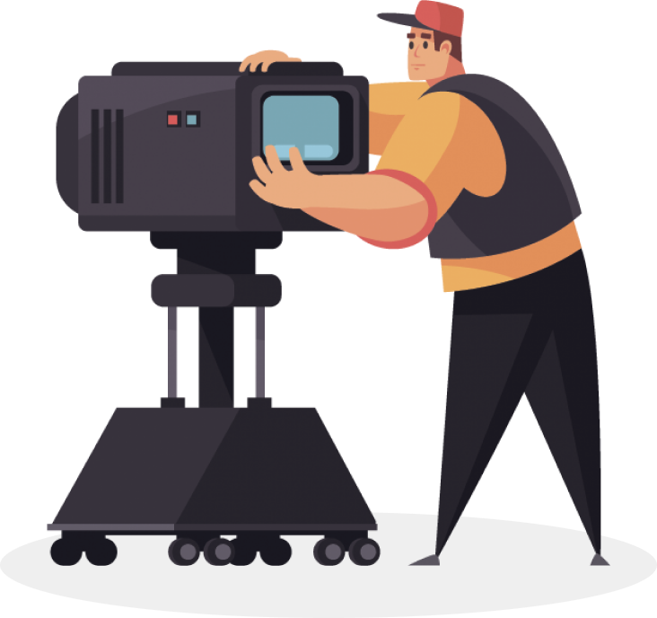

онлайн-курс

18 часов

8 сентября
Как смотреть кино
За 8 занятий станем активными зрителями и разберёмся в кинопроцессе
Зритель для меня
не потребитель моей продукции, не судья, а соучастник творчества, соавтор.
Андрей Тарковский
О курсе
Порой фильмы устроены сложнее четырёхтомных романов. Но читать книги учат со школы, а смотреть кино — нет. При этом без подготовки бывает трудно получить от просмотра удовольствие.
На курсе из 8 занятий научимся быть осознанными зрителями. Познакомимся с этапами кинопроизводства и узнаем, как смотреть кино глазами сценариста, режиссёра и монтажёра. Разберёмся в особенностях жанров и рассмотрим важнейшие картины, от «Гражданина Кейна» до «Матрицы».

8 занятий
Для погружения в кинематограф
2 часа
Длительность каждого занятия
3 недели
Длительность курса